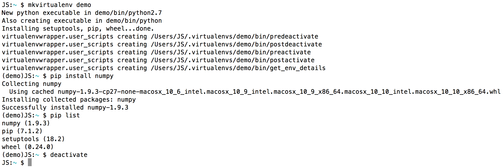

Python Setup
Intro
Setting up your Python environment, especially when you're new to coding, can be overwhelming. There are various options that aim to make the process easier. Anaconda, for example, is a free distribution that includes over "300 of the most popular Python packages." For many people, this is a great solution. For individuals who want control over which packages are installed, Miniconda might be a good option.
When I originally set up my environment, I installed all packages to the global Python—the one that came bundled with OS X—site-packages directory. Toward the end of my first semester of graduate school, an installation of a new package broke an existing one. I had to restore (erase and reinstall OS X) my system.
The second time around, I used virtual environments, which isolate their associated Python packages into their own directories. If something goes wrong, the directory can simply be deleted. For more information on using virtualenv and virtualenvwrapper check out this article from The Hitchhiker's Guide to Python.
In this post, I'll explain how to set up your Python environment in Mac OS X (currently 10.10.5) and how to use virtualenvwrapper.
Set Up
There are a few things which must be installed prior to getting into Python. We'll need to install Xcode's command line tools, which installs the GNU Compiler Collection, as well as homebrew, a package manager for OS X. Depending on the version of your OS, you might also need to install Xquartz. You'll find out when you try installing Python.
First, if you don't already have Xcode, you'll want to install it. For our purposes, we can simply install the command line tools, a much smaller download.
$ xcode-select --install
Next, we'll want to install homebrew.
$ ruby -e "$(curl -fsSL https://raw.githubusercontent.com/Homebrew/install/master/install)"
To ensure that it installed successfully, run the following.
$ brew doctor $ brew update
Also, make sure that /usr/local/bin is at the top of your PATH environment variable.
Now, we can install Python. If you're on OS X, you'll already have Python installed, but installing from homebrew has many benefits. For a nice list, read this Hacker Codex post. Let's install both Python2 and Python3.
$ brew install python $ brew install python3
Let's check that our newly installed versions of Python point to the correct locations. The expected output is shown below each command. We'll do the same for pip, which we'll be using for installing Python packages.
$ which python /usr/local/bin/python $ which python3 /usr/local/bin/python3 $ which pip /usr/local/bin/pip
To install virtualenv and virtualenvwrapper, use pip.
$ pip install virtualenv $ pip install virtualenvwrapper
You'll also need to add a directory that will be the home for the virtual environments you decide to create. I created the .virtualenvs, as shown below.
$ mkdir ~/.virtualenvs
You can name the directory whatever you like, but note that you'll have to replace .virtualenvs with the name of your directory in the code that follows.
If you use bash, which is the default shell in OS X, you'll need to add the following to your ~/.bashrc file. This let's virtualenv know where to put the virtual environments.
export WORKON_HOME=$HOME/.virtualenvs source /usr/local/bin/virtualenvwrapper.sh
That's actually it for the set up! It seems like a lot, but this work up front will pay itself off down the line.
Recap. We installed: command line tools, homebrew, Python, and virtualenv and virtualenvwrapper. We also modified our .bashrc file.
Creating Virtual Environments
Python 2.7
Let's discuss how to create and use our virtual environments. To create a new one, use the following.
$ mkvirtualenv datascience
This has created a new folder inside of .virtualenvs called datascience. It has also activited the virtual environment. This means that you have access to any Python packages associated with that environment—to see what's currently installed use pip list—and that any package installs will be put in $HOME/.virtualenvs/datascience/lib/python2.7/site-packages. ($HOME is just a variable that contains the address of your home directory. In the terminal, run echo $HOME to see your home directory path.)
Since we're interested in data science, let's install the following packages.
$ pip install numpy scipy matplotlib pandas scikit-learn statsmodels $ pip install --upgrade jupyter $ pip install seaborn
If you then pip list, you'll see all the above packages listed (along with some default ones). To exit the virtual environment, simply type deactivate at the terminal.
Below, I show the process of creating a virtual environment, installing a Python package to it (and listing installed packages), and deactivating it.

Notice the active virtual environment name in the parentheses. (Note that your prompt might look different based on any customizations you may have done.) In this example, pip list shows us that numpy, pip, setuptools, and wheel are installed—the last three are installed with each virtual environment instance by default.
You can create more than one virtual environment. In fact, that's the point. Virtual environments were created to help "keep the dependencies required by different projects in separate places." This is a common practice for developers. Data scientists might want to create virtual environments for specific tasks. For example, one for machine learning, one for web scraping, one for natural language processing, etc.
To keep track of the virtual environments you've created, use lsvirtualenv -b. To activate an existing virtual environment, assuming you're not already in one, use workon <name>. If you ever want to delete a virtual environment, just use rmvirtualenv <name>.
Python 3
Let's say you're ready to start using Python 3, which is highly recommended. (If you're not convinced, watch Jake VanderPlas's SciPy 2015 keynote, "The State of the Stack.") If you want to create a virtual environment that uses Python 3, do the following.
$ mkvirtualenv -p python3 <name>
This new virtual environment will now use Python 3 by default. Everything else works as explained above.
Final Thoughts
That's it! Your Python environment is now set up such that you can more effectively control packages and how they interact.
Special thanks to Joël Parras and Marina Mele for their fantastic tutorials on this subject, which much of this post is based on.